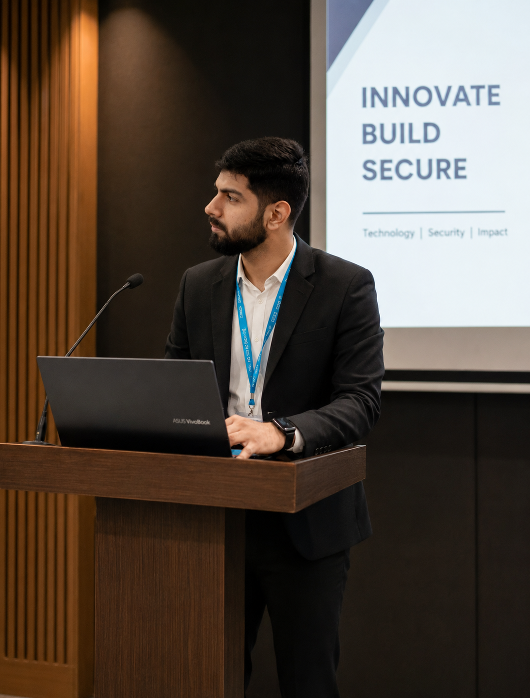

CSE Engineer
Abhijeet Mishra
|
Computer Science student building practical systems across endpoint monitoring, SOC workflows, Python automation, AI-assisted analysis, and secure cloud-ready applications.
Ready to Work
About
Career Story

My career journey has been driven by curiosity and a passion for learning. I began by exploring visual design, where I developed creativity and an eye for user experience. As my interest in technology grew, I worked as a Python Developer Intern, strengthening my programming and problem-solving skills.
My internship at **NIELIT (Government of India)** introduced me to cybersecurity, where I gained practical experience in system security, network analysis, SIEM, and threat detection. These experiences gave me the confidence to explore different areas of technology and continuously expand my skill set. Currently, I am working as a **Software Developer Trainee at Chetu**, where I am gaining real-world software development experience and learning from industry professionals. I don't believe in limiting myself to a single path; instead, I aim to keep learning, embrace new challenges, and contribute wherever my skills can create meaningful impact.
NowChetu training with enterprise delivery discipline
2026Government cybersecurity internship and SOC practice
2026Completed my College with Python automation and AI projects
2025Remote internships in development and design
2022Started my Btech in CSE From Raj Kumar Goel Institute Of Technology
2022Completed my Schooling From Gorakhpur
Cyber Security
Devops
Python
Data Analytics
Machine Learning
AI Automation
Cloud
Networking
Threat Intelligence
Experience
Professional Timeline
Chetu Training
DevOps training
Learning professional engineering discipline around delivery, collaboration, and production-minded software practices.
System & Software Security Intern
NIELIT, Government of India (MeitY)
Configured Snort, deployed Cowrie honeypots, and performed Nmap-based assessment for security monitoring and attack surface discovery.
Visual Designer Intern
InAmigos Foundation
Created campaign posters, visual systems, and social creatives with consistent layout, typography, and brand communication.
Python Developer Intern
Coding Samurai
Built Python applications, API workflows, and Tkinter utilities with debugging, documentation, and practical project delivery.
Skills
Technical Capability
Languages
PythonJavaSQLJavaScriptC
Cyber Security
SnortCowrieWazuhNmapWiresharkLinux
AI
LLMGeminiLangChainOllamaPandasMachine Learning
Tools
GitDockerPower BICanvaFigmaCloudAWS
Featured Project
Cyber Sentinel
🚨 Unauthorized Login Attempt (Event ID 4625)
🔌 Suspicious USB Device Connected
📍 Incident Uploaded • Mobile Alert Sent
Sentinel Agent
FastAPI C2
Cloud
Flutter App
Cyber Sentinel C2 is a real-time endpoint security and forensic monitoring system developed during my internship at NIELIT (MeitY, Government of India). It continuously monitors Windows login events and USB activity, captures forensic evidence, enriches incidents with geolocation data, and instantly delivers alerts to a mobile application through a cloud-based Command & Control (C2) infrastructure.
Architecture
Windows Sentinel Agent → FastAPI C2 Bridge → Render Cloud Backend → Flutter Mobile Dashboard → Real-Time Tactical Alerts
Workflow
Monitor Windows security events → Detect login or USB activity → Capture forensic image → Collect IP & Geo-location → Upload securely to cloud → Notify owner through mobile dashboard
Real-Time Login Monitoring
USB Threat Detection
Stealth Image Capture
Geo-Location Intelligence
Flutter Mobile Alerts
FastAPI C2 Server
Multithreaded Python Agent
Tech Stack
Python • FastAPI • Flutter • OpenCV • WMI • Windows Event Logs • Render
Highlights
Real-time monitoring • Multithreading • Cloud synchronization • Mobile notifications • Digital forensics
Projects
Selected Work
SOC Threat Monitoring & SIEM Integration
Mini SOC environment correlating honeypot and IDS events for real-time security monitoring.
WazuhCowrieSnort
AI-Powered Data Analysis Chatbot
CSV and Excel analysis assistant using Pandas context and a local Ollama LLM workflow.
DjangoPythonOllama
Network Forensics & DoS Analysis
Packet-level analysis of SYN flood behavior, protocol evidence, and investigation notes.
WiresharkTCP/IPForensics
Weather Intelligence App
Python API app with reliable JSON parsing, city lookup, and readable weather insights.
PythonREST APIJSON
Certifications
Credential Stack
Contact